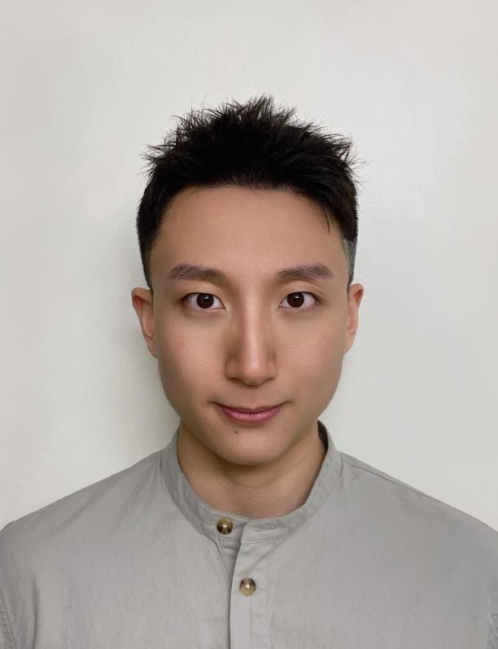

|  | I am a final-year PhD student in Computer Science at ETH Zurich, advised by Niao He. I also work closely with Negar Kiyavash. My research interest lies in optimization and its applications in machine learning. Prior to this, I received a master's degree in Industrial Engineering from the University of Illinois Urbana-Champaign. I received a bachelor's degree in Applied Mathematics and Economics from UCLA in 2017. Email: junchi.yang (at) inf (dot) ethz (dot) ch |
[2023.06] I am giving a talk at the 20th EUROpt Workshop in Budapest in August.
[2023.05] Our paper “Two Sides of One Coin: the Limits of Untuned SGD and the Power of Adaptive Methods” is online.
[2023.03] I am giving a talk at the SIAM Conference on Optimization (OP23) in Seattle in June.
[2023.03] I am attending ICLR 2023 in Kigali in May.
[2023.01] Our paper “TiAda: A Time-scale Adaptive Algorithm For Nonconvex Minimax Optimization” is accepted by ICLR 2023.
[2022.10] I am attending NeurIPS in New Orleans in November. Check out our posters.
[2022.09] One paper is accepted by NeurIPS 2022 and one is accepted by NeurIPS OPT workshop.
(* indicates equal contribution)
Two Sides of One Coin: the Limits of Untuned SGD and the Power of Adaptive Methods
Junchi Yang*, Xiang Li*, Ilyas Fatkhullin, and Niao He.
Manuscript 2023. [arXiv]
TiAda: A Time-scale Adaptive Algorithm For Nonconvex Minimax Optimization
Xiang Li, Junchi Yang, and Niao He.
ICLR 2023 (preliminary version in NeurIPS OPT Workshop) [arXiv]
Nest Your Adaptive Algorithm for Parameter-agnostic Nonconvex Minimax Optimization
Junchi Yang*, Xiang Li*, and Niao He.
NeurIPS 2022 [arXiv]
Faster Single-loop Algorithms for Minimax Optimization without Strong Concavity
Junchi Yang, Antonio Orvieto, Aurelien Lucchi, and Niao He.
AISTATS 2022 [arXiv] [AISTATS]
The Complexity of Nonconvex-strongly-concave Minimax Optimization
Siqi Zhang*, Junchi Yang*, Cristobal Guzman, Negar Kiyavash and Niao He.
UAI 2021 [arXiv] [UAI]
A Catalyst Framework for Minimax Optimization
Junchi Yang, Siqi Zhang, Negar Kiyavash, and Niao He.
NeurIPS 2020 [NeurIPS]
Global Convergence and Variance Reduction for a Class of Nonconvex-nonconcave Minimax Problems
Junchi Yang, Negar Kiyavash, and Niao He.
NeurIPS 2020 [arXiv] [NeurIPS]
20th EUROpt Workshop 2023. Title: “From SGD to Adaptive Methods: Benefits of Adaptive Gradient Techniques”.
SIAM Conference on Optimization 2023 (OP23). Title: “Adaptive Algorithms for Nonconvex Minimax Optimization”.
CSL Student Conference 2021. Title: “A Catalyst Framework for Minimax Optimization”.
INFORMS 2020 Annual Meeting. Title: “Simple and Efficient Algorithms for Classes of Nonconvex Minimax Optimization”.
Optimization for Data Science. ETH Zurich. 2022 Spring, 2023 Winter.
Foundations of Reinforcement Learning. ETH Zurich. 2021 Fall.
Analysis of Data. UIUC. 2019 Fall.
Reviewer for NeurIPS, ICML, ICLR, AISTATS and TMLR.
I received ISE Student Fellowship at UIUC 2017-2018.
Top reviewer for NeurIPS 2022.
I play volleyball and used to play badminton and table tennis. I am learning snowboarding and tennis.